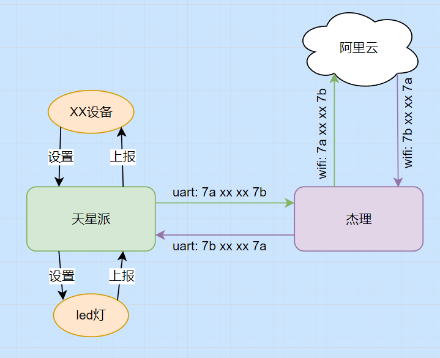
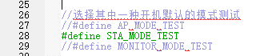
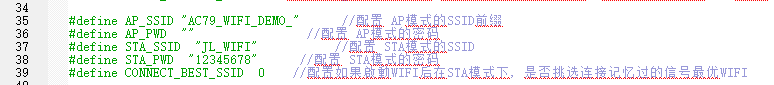
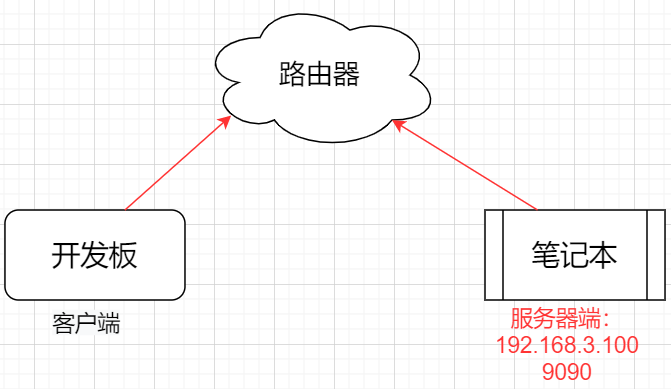

<!DOCTYPE lake>
<p data-lake-id="ub44041ee" id="ub44041ee"><span data-lake-id="u94c0e66f" id="u94c0e66f">物联网开发就是让我们物理设备能连上互联网，在下面这个演示图例中，我们的天星派开发板本身不能连接互联网，但是我们给它添加一块具备联网能力的芯片，就可以将天星派的数据传输到互联网中，并且我们还可以通过互联网来控制天星派的动作。</span></p><h2 data-lake-id="gxHkm" id="gxHkm" style="text-align: center"></h2><p data-lake-id="uea3932d8" id="uea3932d8"><span data-lake-id="u41286bb5" id="u41286bb5">WIFI Demo工程说明：</span><a data-lake-id="u39f90dff" href="https://doc.zh-jieli.com/AC79/zh-cn/master/project_template/demo/demo_wifi.html" id="u39f90dff" rel="noopener noreferrer" target="_blank"><span data-lake-id="ubc7b11f8" id="ubc7b11f8">https://doc.zh-jieli.com/AC79/zh-cn/master/project_template/demo/demo_wifi.html</span></a></p><p data-lake-id="u71213ba1" id="u71213ba1"><span data-lake-id="ud8e41236" id="ud8e41236">WIFI部分官方文档：</span><a data-lake-id="u938cfab7" href="https://doc.zh-jieli.com/AC79/zh-cn/master/module_example/wifi/index.html" id="u938cfab7" rel="noopener noreferrer" target="_blank"><span data-lake-id="u0d523ce6" id="u0d523ce6">https://doc.zh-jieli.com/AC79/zh-cn/master/module_example/wifi/index.html</span></a></p><h2 data-lake-id="tFXc0" data-lake-index-type="2" id="tFXc0"><span data-lake-id="u030ce303" id="u030ce303">wifi配置</span></h2><p data-lake-id="ufc8b6af2" id="ufc8b6af2"><span data-lake-id="ucbf2c4c9" id="ucbf2c4c9">要想进行物联网开发，我们首先得让设备能够联网，这里我们让杰理开发板连上家里的wifi.</span></p><p data-lake-id="u351f8874" id="u351f8874"><span data-lake-id="u3d08d0ed" id="u3d08d0ed">我们需要在app_config.h文件中定义</span><strong><span data-lake-id="uc835742a" id="uc835742a">USE_DEMO_WIFI_TEST，</span></strong><span data-lake-id="ub4d60945" id="ub4d60945">工程会在wifi_demo_task.c文件中自动启动wifi相关的任务， 我们将工程配置为连接外部网络STA模式</span></p><p data-lake-id="u0919c7ef" id="u0919c7ef"></p><p data-lake-id="u14adeee8" id="u14adeee8"><span data-lake-id="ub0071b5c" id="ub0071b5c">默认工程会使用如下账号密码</span></p><p data-lake-id="u66672664" id="u66672664"></p><p data-lake-id="u1782ce08" id="u1782ce08"><span data-lake-id="u848122f7" id="u848122f7">如果使用希望开机之后自动连上wifi，可以将上面的</span><span data-lake-id="u0f16c063" id="u0f16c063" style="color: #DF2A3F">STA_SSID</span><span data-lake-id="ub12a5c3e" id="ub12a5c3e">和</span><span data-lake-id="ue7de367e" id="ue7de367e" style="color: #DF2A3F">STA_PWD</span><span data-lake-id="ud9f416be" id="ud9f416be">改成自己的手机热点账号密码或者家里路由器的账号密码</span></p><p data-lake-id="u5e6c50d7" id="u5e6c50d7"><span data-lake-id="u9d892db5" id="u9d892db5">​</span><br/></p><blockquote class="lake-alert lake-alert-color4" data-lake-id="u2a3ebfa9" id="u2a3ebfa9"><p data-lake-id="ub06d064a" id="ub06d064a"><strong><span data-lake-id="u0dad6c90" id="u0dad6c90">注意：</span></strong></p><p data-lake-id="uf4764a8f" id="uf4764a8f"><span data-lake-id="ue023622d" id="ue023622d">若手机为</span><span data-lake-id="u2ff2f2d4" id="u2ff2f2d4" style="color: #DF2A3F">苹果</span><span data-lake-id="u001b2918" id="u001b2918">，请开启它的兼容模式，支持国产手机从你我做起。</span></p><p data-lake-id="uf39a7649" id="uf39a7649"><span data-lake-id="u316beb26" id="u316beb26">若手机为国产手机，请将网络频段改成2.4G，物联网手机一般都使用2.4G,不支持5G</span></p></blockquote><p data-lake-id="u5460ddca" id="u5460ddca"><span data-lake-id="ud4990147" id="ud4990147">​</span><br/></p><p data-lake-id="ubbe2ab7a" id="ubbe2ab7a"><span data-lake-id="u529f0169" id="u529f0169">若按照上述步骤仍然无法连接上外部网络，请将一下参数改为1</span></p><span class="yuque-card-unsupported">[codeblock]</span><p data-lake-id="u8f54cf71" id="u8f54cf71"><br/></p><p data-lake-id="u631fc42c" id="u631fc42c"><span data-lake-id="ubaa44e89" id="ubaa44e89">当wifi任务启动之后，我们可以通过调用如下函数，让芯片连接上外部的网络</span></p><span class="yuque-card-unsupported">[codeblock]</span><h3 data-lake-id="unKXF" data-lake-index-type="2" id="unKXF"><span data-lake-id="ue61e4b6c" id="ue61e4b6c">相关日志</span></h3><p data-lake-id="ue07eb3ae" id="ue07eb3ae"><span data-lake-id="u3f5290a5" id="u3f5290a5">STA模式启动成功日志</span></p><span class="yuque-card-unsupported">[codeblock]</span><p data-lake-id="u44193be8" id="u44193be8"><span data-lake-id="u95fedbb1" id="u95fedbb1">WIFI连接成功日志</span></p><span class="yuque-card-unsupported">[codeblock]</span><p data-lake-id="u7153eb31" id="u7153eb31"><span data-lake-id="u4baed115" id="u4baed115">NTP时间设定成功日志</span></p><span class="yuque-card-unsupported">[codeblock]</span><h2 data-lake-id="Rtmi9" data-lake-index-type="2" id="Rtmi9"><span data-lake-id="u9f566e60" id="u9f566e60">TCP通讯</span></h2><p data-lake-id="u1406ab74" id="u1406ab74"><span data-lake-id="udd27cefa" id="udd27cefa">下面我们来学习一个局域网内的物联网小案例，我们让杰理开发板作为客户端，自己的笔记本电脑作为服务器端，让杰理开发板和笔记本电脑通过wifi互相通信。我们知道两个设备要想进行通信，有一个基础就是它们必须在同一个局域网中，所以在本节案例中我们需要让杰理开发板和笔记本连接同一个路由器，它们才能在同一个局域网中。</span></p><p data-lake-id="uc8575c5e" id="uc8575c5e"><span data-lake-id="u3770d9ca" id="u3770d9ca">​</span><br/></p><p data-lake-id="ub271b4e6" id="ub271b4e6"><span data-lake-id="uc44df40f" id="uc44df40f" style="color: #DF2A3F">注意：如果没有线程的路由器，可以让手机开启热点充当路由器，让杰理开发板和笔记本都连接到手机热点上</span></p><p data-lake-id="uaf714f4a" id="uaf714f4a"><span data-lake-id="u4367dd25" id="u4367dd25">​</span><br/></p><p data-lake-id="uf6b3a7af" id="uf6b3a7af"><span data-lake-id="uce7cfae0" id="uce7cfae0">杰理的SOCKET文档：</span><a data-lake-id="ud12db664" href="https://doc.zh-jieli.com/AC79/zh-cn/master/module_example/network_protocols/socket.html" id="ud12db664" rel="noopener noreferrer" target="_blank"><span data-lake-id="uce9b868c" id="uce9b868c">https://doc.zh-jieli.com/AC79/zh-cn/master/module_example/network_protocols/socket.html</span></a></p><p data-lake-id="u886a4253" id="u886a4253" style="text-align: center"></p><h3 data-lake-id="XAkRL" data-lake-index-type="2" id="XAkRL"><span data-lake-id="uc73f77ae" id="uc73f77ae">socket初始化</span></h3><p data-lake-id="uc0c23287" id="uc0c23287"><span data-lake-id="u1cd06d01" id="u1cd06d01">首先需要初始化socket，并指定协议. </span></p><p data-lake-id="u049287ed" id="u049287ed"><span class="lake-fontsize-12" data-lake-id="u42fc1318" id="u42fc1318" style="color: rgb(34, 34, 34); background-color: rgb(252, 252, 252)">示例代码见 </span><code data-lake-id="u1e91c07a" id="u1e91c07a"><span class="lake-fontsize-9" data-lake-id="u8d8f414a" id="u8d8f414a" style="color: rgb(231, 76, 60)">apps\common\example\network_protocols\sockets\tcp\client\main.c</span></code></p><span class="yuque-card-unsupported">[codeblock]</span><p data-lake-id="udacfff9e" id="udacfff9e"><span data-lake-id="ue5f40d1b" id="ue5f40d1b">初始化调用的逻辑，很简单，只需要指定IP地址和端口号即可</span></p><span class="yuque-card-unsupported">[codeblock]</span><p data-lake-id="u17e10c5b" id="u17e10c5b"><br/></p><h3 data-lake-id="fUgA6" data-lake-index-type="2" id="fUgA6"><span data-lake-id="u33618b5d" id="u33618b5d">发送数据</span></h3><p data-lake-id="u68036f58" id="u68036f58"><br/></p><span class="yuque-card-unsupported">[codeblock]</span><h3 data-lake-id="ygLmq" data-lake-index-type="2" id="ygLmq"><span data-lake-id="ubd84fff9" id="ubd84fff9">接收数据</span></h3><span class="yuque-card-unsupported">[codeblock]</span><p data-lake-id="ud50237bd" id="ud50237bd"><br/></p><p data-lake-id="u3b1e213f" id="u3b1e213f"><span data-lake-id="ubad81abb" id="ubad81abb">接收数据代码</span></p><span class="yuque-card-unsupported">[codeblock]</span><p data-lake-id="u831f65cc" id="u831f65cc"><br/></p><h3 data-lake-id="tfm7w" data-lake-index-type="2" id="tfm7w"><span data-lake-id="ud4cbbd1d" id="ud4cbbd1d">完整示例代码</span></h3><p data-lake-id="u9300a76d" id="u9300a76d"><span data-lake-id="u1b0297d2" id="u1b0297d2">客户端：</span></p><span class="yuque-card-unsupported">[codeblock]</span><p data-lake-id="u18a6cc83" id="u18a6cc83"><span data-lake-id="u2fa4537c" id="u2fa4537c">服务器端：</span></p><span class="yuque-card-unsupported">[codeblock]</span><p data-lake-id="ucd313d8e" id="ucd313d8e"><br/></p>